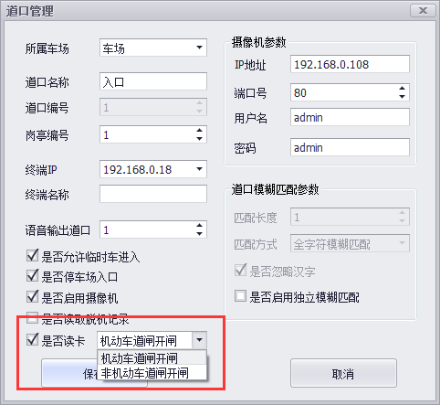

软件版本号为2.6.X的已经支持对非机动车刷卡进出功能的支持.
刷卡器需购买我公司配套的产品,不能随意在市面上购买使用.
打开软件,在车道设置里选中某条车道信息,双击修改.

上图着重处,勾选"是否读卡",然后根据项目实际情况选择合理的选项.
机动车道匣开匣:非机动车和机动车共用车道的场景.选择此项,调用相机的继电器控制道匣.
非机动车道匣开匣:非机动车有专有车道,即人车分流的场景.选择此项,调用刷卡器的继电器控制非机动车道的
道匣或电子锁等受控设备.
同理,如果其它车道也需要通过刷卡控制非机动车进出,也需要如上图这样操作.